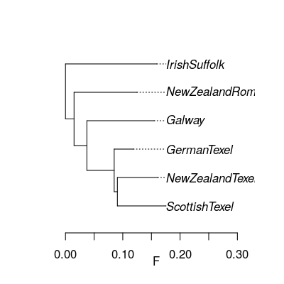
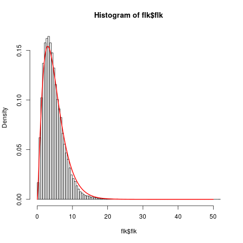

This is the principle section
hapflk is a python program that is meant to be used on the command
line.plink format. Preferably binary
{bed,bim,fam} files.For this practical we will analyse data from The SheepHapMap project. First download the data:
mkdir -p practical/hapflk/data/
## get input files into practical directory (TODO)
##wget ...
The first task will be aimed at running hapflk in SNP mode, to:
This is done by running:
hapflk --bfile practical/hapflk/data/NEU --outgroup=Soay -p practical/hapflk/NEU
Which should take ~ 2 minutes.
This leads to the following output files:
ls practical/hapflk/NEU*
practical/hapflk/NEU_fij.txt practical/hapflk/NEU.flk practical/hapflk/NEU.frq practical/hapflk/NEU_reynolds.txt practical/hapflk/NEU_tree.txt
Let’s look at the population tree (NEU_tree.txt).
library(ape)
neu.t=read.tree('practical/hapflk/NEU_tree.txt')
plot(neu.t,align=T)
axis(1,line=1.5)
title(xlab='F')
Notice that the outgroup (Soay) has been removed.

The kinship file contains the (co)variance matrix of allele frequencies estimated with all SNPs.
| ScottishTexel | 0.175 | 0.091 | 0.085 | 0.037 | 0.015 | 0 |
| NewZealandTexel | 0.091 | 0.161 | 0.085 | 0.037 | 0.015 | 0 |
| GermanTexel | 0.085 | 0.085 | 0.119 | 0.037 | 0.015 | 0 |
| Galway | 0.037 | 0.037 | 0.037 | 0.155 | 0.015 | 0 |
| NewZealandRomney | 0.015 | 0.015 | 0.015 | 0.015 | 0.125 | 0 |
| IrishSuffolk | 0 | 0 | 0 | 0 | 0 | 0.159 |
The NEU.flk file contains results of the FLK test.
We can check the fit of the model by verifying that the empirical distribution of FLK is close to a \(\chi^2(5)\)
flk=read.table('practical/hapflk/NEU.flk',h=T)
hist(flk$flk,n=100,f=F)
xx=seq(0,50,0.01)
lines(xx,dchisq(xx,df=5),lwd=2,col=2)

plink --sheep --bfile practical/hapflk/data/NEU \
--chr 2 --from-kb 100000 --to-kb 140000\
--out practical/hapflk/data/mstn --make-bed